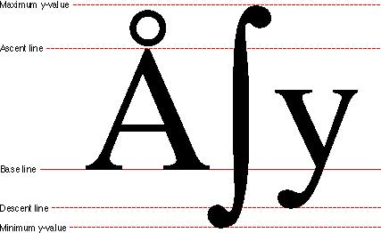

|
FontsWhen you write software that supports non-Roman scripts, don't make assumptions about font sizes; let the user choose them. For example, system or application fonts may be preset to 12 or 18 points. A font with a resourceID of 0 is not always set to Chicago, nor are system fonts always Chicago and Geneva. Use system and application fonts when the user cannot choose the font, but don't hard code Roman values. If you must assign font sizes, use the Script Manager to get a script system's appropriate fonts and sizes. Use the proper font names as defined by worldwide system software. Whenever possible, display font names in the proper script and font in your Font menu. In some scripts and fonts, diacritical marks may extend beyond the ascent line. Other fonts, such as Japanese fonts, contain glyphs that extend to the boundaries of the enclosing rectangle of the font, or to both minimum-y and maximum-y lines. Leave room for space between lines of text and between the top and bottom lines of any enclosing rectangle. See Inside Macintosh: Text for more information. Figure 2-6 shows some glyphs that demonstrate the boundaries you need to allow for in lines of text. Figure 2-6 The boundaries of a font  |